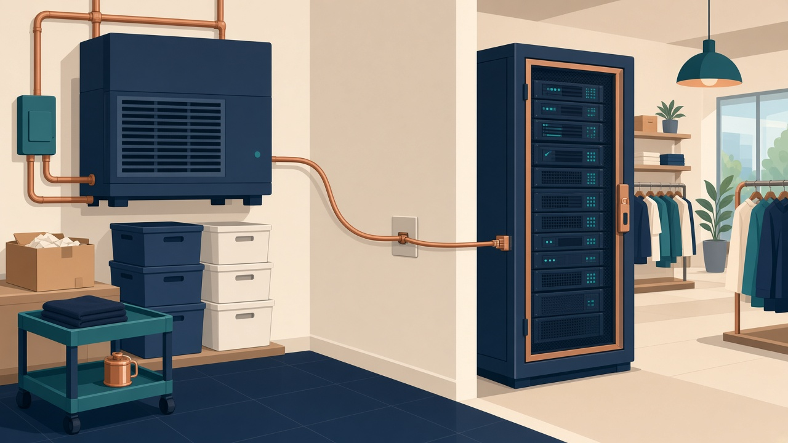

الوحدة 11 · نتاج التعلم ب
خريطة واحدة قبل أن نبدأ الاستعراض
الهدف ب يسأل: ماذا يتغير في أمن الشخص والمؤسسة حين نختار شبكة، ونوصل أجهزة، ونشغّل خدمات فوقها؟ هذه الصورة تجمع الأجزاء الثلاثة. نحكيها مرة، ثم ندخل التفاصيل بالترتيب نفسه.

ب1 · أي شبكة؟
محلية داخل المبنى، لاسلكية في الهواء، واسعة بين المبنيين والإنترنت، تخزين للبيانات الضخمة، وفقاعة شخصية حول الهاتف.
ب2 · بأي قطعة؟
حاسوب، Switch، Router، Access Point، كيبل أو ليف أو موجة، ونظام تشغيل يشغّل الجهاز.
ب3 · أي خدمة؟
اسم يتحول إلى رقم، عنوان يُوزَّع، دليل يعرف الموظف، و Router يقرر أي مبنى تصل إليه الحزمة.
مسار الاستعراض
من النوع إلى القطعة إلى الخدمة
في كل جزء السؤال واحد: من يصل؟ ماذا يتوقف لو انقطعت؟ وأي بيانات تخرج لو وصلت إلى اليد الخطأ؟ السماعة بجانب المصطلح تنطقه بالإنجليزية.
ب2 مكونات الشبكة
أجهزة المستخدم بما فيها المحمولة Switch، Router، Access Point، Modem، USB hub كيبل، ألياف، Wi-Fi، بلوتوث، أشعة تحت حمراء، Li-Fi ذاكرة محمولة ووسائط ضوئية أنظمة تشغيل الأجهزة والشبكة مراقبة، سجلات، فحص ثغرات، التقاط حزم قواعد بيانات، مستندات، اكتشاف الشبكةب3 خدمات البنية
TCP/IP والمنافذ والحزم NAT وIPv4 وIPv6 وRFC 1918 نطاقات ونطاقات فرعية تجزئة بـ Router DNS والدليل والمصادقة DHCP والتوجيه والوصول البعيد ملفات وطباعة وويب وبريد